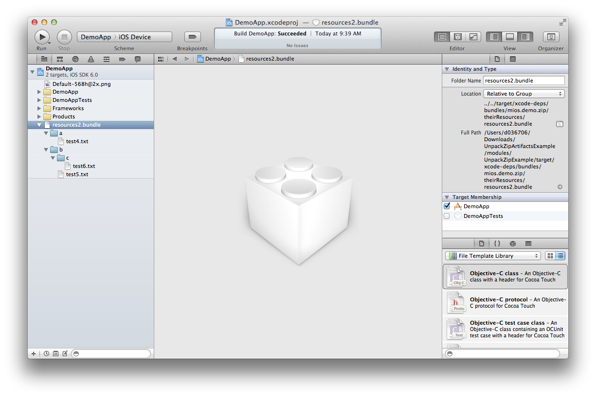

How to use generic ZIP bundles
Purpose of this page
Sometimes resources are provided in a generic way as a ZIP file to ensure they can be consumed in various builds (e.g. iOS, Android, Windows 8,...). This page explains what need to be done in order to get such ZIP artifacts resolved and what's the prefered way to work with them.
The big picture
Maven dependencies should be resolved to Maven-Root/target/xcode-deps.
There are 3 ways you might want to handle dependencies to ZIP artifacts:
- Copy the ZIP file to Maven-Root/target/xcode-deps
- Unpack the ZIP file content to a folder in Maven-Root/target/xcode-deps
- Unpack the ZIP file content as a bundle to Maven-Root/target/xcode-deps/bundles\
How it works
The maven-dependency-plugin can be used to copy or unpack artifacts to specific locations. Use the unpack goal to unpack the ZIP or the copy goal to copy the ZIP.
Example Project
An example for the scenario described on that page can be found here.
The example project contains two modules
- PrepareDemoZip builds two ZIP files with different classifiers (resource1 and resource2)
- UnpackZipExample consumes those two ZIP artifacts and
- Unpacks one ZIP artifact
- Unpacks one ZIP artifact as bundle
- Copies one ZIP artifact
Simply unpack and run mvn clean install in the root folder. The ZIP artifacts are extracted to folder modules/UnpackZipExample/target/xcode-deps/....
Definitions in the pom.xml
In the dependency section define the dependency to the artifact as usual. To only download the ZIP file without other side artifacts you should specify the type zip and the classifier if needed.
[...]
<dependencies>
<dependency>
<groupId>mios.demo.zip</groupId>
<artifactId>theirResources</artifactId>
<classifier>resources1</classifier>
<type>zip</type>
<version>1.0.0</version>
</dependency>
</dependencies>
[...]But it is also possible to only declare the dependency to the pom. In the maven-dependency-plugin section you have to specify the zip artifact again anyway. Only the pom.xml and the ZIP file is downloaded this way.
This option is also useful if you want to unpack or copy several ZIP side artifacts. You have to specify the side artifacts only once in the plugin secion instead of redundantly in the dependency and plugin section.
[...]
<dependencies>
<dependency>
<groupId>mios.demo.zip</groupId>
<artifactId>theirResources</artifactId>
<type>pom</type>
<version>1.0.0</version>
</dependency>
</dependencies>
[...]Common Configuration and Rules
- Artifacts have to be copied or unpacked to folder ${project.build.directory}/xcode-deps/! The structure below can be chosen arbitrarily. The reason is the xcode project configuration that must refer to those folders per relative path to use the content. Because the maven build will copy the whole environment into the target folder before the build execution it must be assured that the xcode project configuration works for the usage in the local IDE (directly the source location) and during the maven controlled build exection (done on the copy below the target folder). This requires that all refered content must be copied together with the sources. The xcode plugin already copies the content of the xcode-deps folder (as contract container for the xcode project for externally provided files) It does not know about arbitray folders managed by other maven plugins. Therefore the xcode-deps folder is the folder of the choice.
- The unpack/copy execution should be done in the <phase>initialize</phase> since all dependencies are resolved and prepared there.
- In the configuration part of the plugin you have to specify the groupId, artifactId, type "zip" (and the classifier if needed) of the artifact to copy again. The version is not required since is already specified in the dependency section.
- As described above, as outputDirectory you have to use ${project.build.directory}/xcode-deps/ followed by an arbitrary structure. We recommend to use bundles/<groupId>/<artifactId>.
[...] <build> <plugins> [...] <plugin> <groupId>org.apache.maven.plugins</groupId> <artifactId>maven-dependency-plugin</artifactId> <version>2.5.1</version> [...] <executions> <execution> <id>executionId</id> <phase>initialize</phase> <goals> <goal>[copy|unpack]</goal> </goals> <configuration> <artifactItems> <artifactItem> <groupId>mios.demo.zip</groupId> <artifactId>theirResources</artifactId> <classifier>resources1</classifier> <type>zip</type> <!-- version>The version is fetched from the dependency declaration above </version --> <overWrite>true</overWrite> <outputDirectory>${project.build.directory}/xcode-deps/[...]</outputDirectory> <!-- Only required for copy: --> <destFileName>[...]</destFileName> </artifactItem> </artifactItems> </configuration> </execution> </executions> [...] </plugin> </plugins> </build>
How to configure Unpack
See "Common Configuration and Rules". Additional configuration steps are described here.
- In the plugins section add the maven-dependency-plugin with goal unpack.
- In the outputDirectory you have to specify the folder the ZIP shall be extracted to. The directory has to start with ${project.build.directory}/xcode-deps/! If you want the ZIP to be extracted as a bundle simply add the extension .bundle to the output directory.
[...] <execution> [...] <goals> <goal>unpack</goal> </goals> <configuration> <artifactItems> <artifactItem> <groupId>mios.demo.zip</groupId> <artifactId>theirResources</artifactId> <classifier>resources2</classifier> <type>zip</type> <overWrite>true</overWrite> <outputDirectory>${project.build.directory}/xcode-deps/bundles/mios.demo.zip/theirResources/resources2.bundle</outputDirectory> </artifactItem> </artifactItems> </configuration> </execution> [...]
How to configure Copy
See "Common Configuration and Rules". Additional configuration steps are described here.
- In the plugins section add the maven-dependency-plugin with goal copy.
- You can specify the target filename in the destFileName tag.
[...] <execution> [...] <goals> <goal>copy</goal> </goals> <configuration> <artifactItems> <artifactItem> <groupId>mios.demo.zip</groupId> <artifactId>theirResources</artifactId> <classifier>resources1</classifier> <type>zip</type> <overWrite>true</overWrite> <outputDirectory>${project.build.directory}/xcode-deps/bundles/mios.demo.zip/theirResources</outputDirectory> <destFileName>resources1.zip</destFileName> </artifactItem> </artifactItems> </configuration> </execution> [...]
How to add the resources to your Xcode project
- Open your Xcode project from the src/xcode folder.
- Drag the bundle from the target/xcode-deps/... folder to the Xcode project.

- Select Create folder references for any added folders to have the same structure as on the file system.
- By selecting Create groups for any added folders the structure in XCode can be changed without changing the structure in the filesystem.

- The imported bundle is now available in the Xcode project
The example project
- When you initially unpack the example project and open modules/UnpackZipExample/src/xcode/DemoApp.xcodeproj the resources2.bundle cannot be resolved
- After calling (at least) mvn initialize the dependency to the bundle is resolved and the bundle is unpacked to the target/xcode-deps folder where the Xcode project expects it.